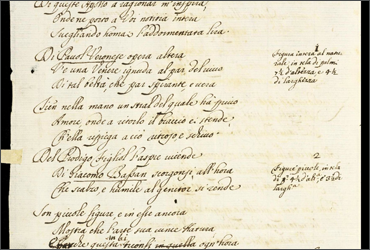
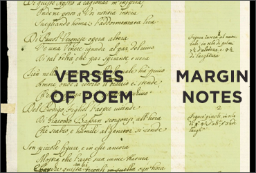
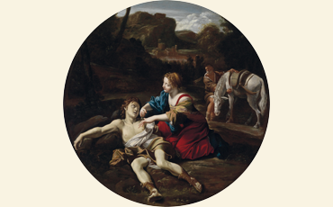

About
Get Started
What Is This Manuscript?
-
Paging through Pietro Mellini’s inventory in verse.
In 1681, Pietro Mellini wrote a poem describing the “greatest hits” of his family’s art collection in Rome.
The manuscript is now part of the Getty Research Institute collection.
-

Detail of the handwritten manuscript.
This unusual document presents a puzzle to scholars.
Collections of art are traditionally described in a legal document, called an inventory, that helps estimate the value of an estate. Mellini’s document is part poem and part inventory, a hybrid of two different types of text.
-

The structure of Mellini’s poem—verses of poetry next to numbered marginal notes that refer to the paintings.
Mellini based his poem on a conventional inventory that was compiled the year before, in 1680. The structure of Mellini’s poem: verses of poetry next to numbered marginal notes that refer to the paintings.
The numbered notes in the margins list paintings described in adjacent verses. Mellini also underlined most of the artists’ names.
-

Paging through Pietro Mellini’s inventory in verse.
Mellini’s poem was written on thirteen sheets, or folios.
The sides of a folio are referred to as the recto (front) and verso (back).
-

This is one of only three paintings definitively identified as belonging to the Mellinis’ collection. Angelica and Medoro by Giovanni Lanfranco (1600–1647), is currently in a private collection in Milan.
The project researchers were able to identify only a few artworks that Mellini described in his poem. This is common when researching historical documents of this type.
Included in this site are images of identified and related artworks that give a sense of what the Mellini collection may have looked like.
-
Learn more about Mellini’s unusual manuscript in scholarly essays by the project’s research team:
-
Who Were Pietro and Savo Mellini?
Nuria Rodríguez Ortega -
What Is an Inventory?
Francesca Cappelletti -
Identifying the Works in the Mellini Collection
Murtha Baca
-